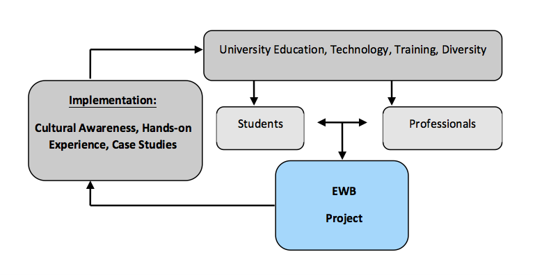

SECTION 10: PROFESSIONAL CHAPTERS
10.1 Description and General Information
Professional Chapters are group of professionals who are willing to work together mentoring and assisting University students in carrying out EWB projects.
The model for Professional Chapters is shown below:
While university engineering programs focus on academic student education and research, professional chapter activities will focus on the provision of mentorship, training, and field experience to the student chapters.
This type of partnership results in environmentally and economically sustainable projects that are compatible with the environment, society and the culture of disadvantaged communities. We believe that professional/student partnering will develop a new generation of engineering students, who will benefit from seeing the many facets of engineering solutions to problems in developing communities, beyond the technical skills obtained in their curriculum – and in the education of host-community partners
Professionals are not limited to engineers, but also surveyors, scientists, social workers, and all other professionals that can help us to deliver the services to the local community and partner communities. Students are involved in every step of the process, enabling them to learn first-hand about solutions to the problems of the developing world.
10.2 Objectives
- To assist in training a new generation of professionals through the mentorship of student chapters in new and on-going national and international development chapters. Each Professional Chapter is asked to “adopt” a student chapter if possible.
- To contribute to new and on-going development projects, promote high engineering standards, and to expand the dimensions of experience for emerging and practicing engineers.
- To provide technical resource for students of all levels.
- To collect and provide research on sustainable technologies to create internationally responsible engineers.
- To maintain a presence in the local community through service.
- To inspire with word and action a new generation of students towards humanitarian work.
10.3 What does a Professional Chapter do
- Provides technical and mentoring assistance to student chapters.
- Attracts new members.
- The chapter provides a means for new professionals of all disciplines to help make a difference.
- EWB is open to engineering professionals and non-engineering professionals alike.
- Works on Professional Members Projects.
- Holds meetings once a month or as necessary.
- Provides training for students and other professionals.
- Acts as a technical resource.
- Finds and applies for projects.
- Forms sub-committees to work on projects.
10.4 How to start a Professional Chapter
Before starting a chapter, it is necessary to have in place:
- A driven leader.
- Some motivated professionals with enough time to dedicate to this project: we recommend a minimum of 3 people for each chapter.
Once enough people are interested in starting a Professional Chapter, the next step is to contact EWB-HK, namely the Hong Kong Project Committee, which will operate as a reference for all Professional Chapters.
EWB-HK will provide information on how to formally start the Chapter and will require each chapter to submit a formal Professional Chapter Startup Form.
The Form should be submitted at the beginning of each school year.
10.5 Professional Chapters Structure
Each Professional Chapter must have at least an energetic leader who is willing to put enough time to make the Chapter successful. This leader is nominated President of the Chapter.
Each chapter must have a President. If other strong-willed individuals are willing to help the President managing the Chapter, they can be nominated Deputy Presidents of the Chapter.
Other officers may include a Secretary and a Treasurer, to the President discretion and based on the size of the Chapter. The only mandatory officer for each chapter is the President.
All officers remain in power for the entire student year and can be replaced for the next year, upon submission of a new Startup Form.
Representation of each Professional Chapter is assured via an Executive Committee, which interacts directly with EWB-HK and includes representatives from all Professional Chapters in Hong Kong. Each Chapter authorizes a maximum of 4 representatives to join the Executive Committee, so the total number of members of the Executive Committee is 4n (with n being the number of Professional Chapters).